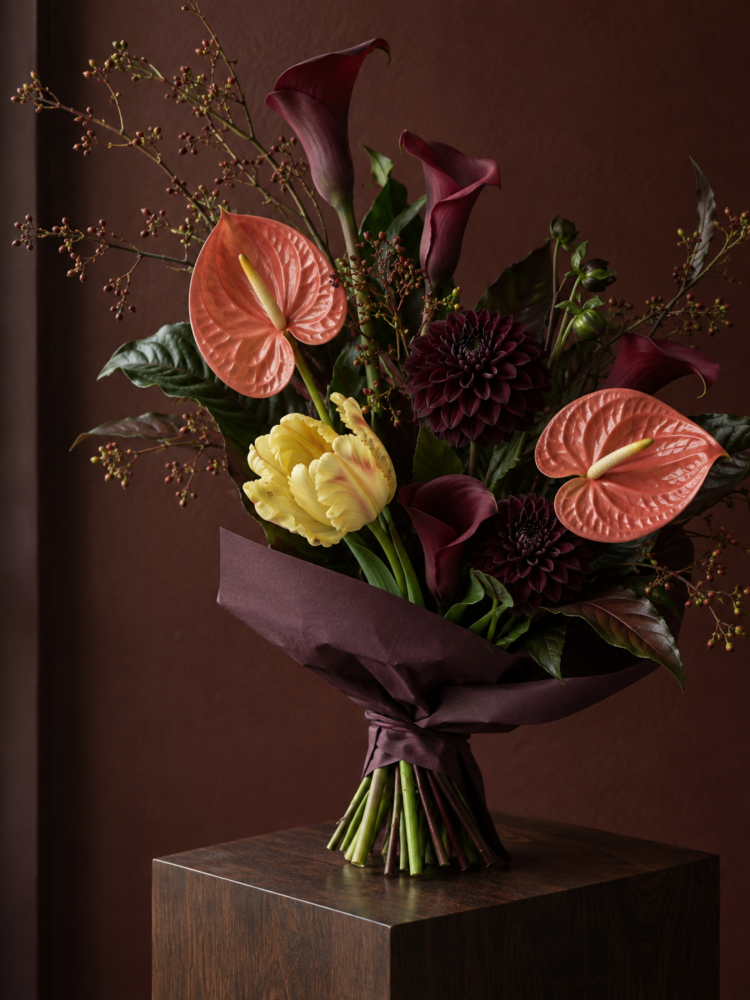

01 首页
02 搭配
03 结果
9:41
▮▮ ▰
flower
···
◎
用一束花，
表达此刻。

花与日常 / 001
开始搭配
↗
01
照片灵感
从颜色开始
↗
02
花束复刻
留住喜欢的花
↗
03
场景试花
放进你的生活
↗
创作
作品
←
一束，慢慢来
···
◎
你的花束
本稿可点选花材 · 拖动在正式版实现
↶ 撤销
花材清单 ↗
主花
次花
填充
叶材
包装
完成搭配
↗
←
flower
···
◎
日常的一点诗意
一束属于你的花
搭配预览
这一束的组成
花店制作参考
预览花卡
↗
生成真实效果图
效果图供参考，制作以确认后的花材清单为准。
flower 视觉与交互设计稿
纸白 · 墨色 · 苔绿
知道了